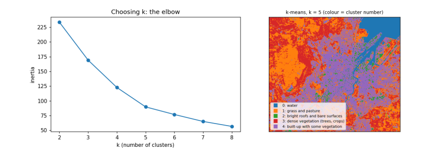

5. Clustering, regridding and interpolation¶
5.1 Unsupervised classification: k-means¶
K-means clustering groups pixels by their spectra without being told what the groups are. It places k centres in the five-band reflectance space, assigns each pixel to the nearest centre, moves each centre to the mean of its pixels, and repeats until nothing changes. The analyst chooses k and afterwards names each cluster by looking at its average spectrum. Inertia (the total squared distance of pixels to their centres) always falls as k grows; the "elbow", where it stops falling quickly, suggests a sensible k.
X = np.c_[[img[n].ravel() for n in BANDS.values()]].T
ok = np.isfinite(X).all(axis=1)
sample = X[ok][rng.choice(ok.sum(), 20000, replace=False)]
inertia = {k: KMeans(k, n_init=4, random_state=0).fit(sample).inertia_ for k in range(2, 9)}
print("inertia by k:", {k: round(v, 1) for k, v in inertia.items()})
km = KMeans(5, n_init=8, random_state=0).fit(sample)
labels = np.full(X.shape[0], -1); labels[ok] = km.predict(X[ok]); labels = labels.reshape(shape)
centres = pd.DataFrame(km.cluster_centers_, columns=list(BANDS.values()))
centres["NDVI"] = nd(centres.nir, centres.red); centres["NDWI"] = nd(centres.green, centres.nir); centres["NDBI"] = nd(centres.swir, centres.nir)
centres["share"] = [np.mean(labels[labels >= 0] == k) for k in range(5)]
def name(r):
if r.NDWI > 0: return "water"
if r.NDVI > 0.8: return "dense vegetation (trees, crops)"
if r.NDVI > 0.5: return "grass and pasture"
if r.blue > 0.15: return "bright roofs and bare surfaces"
if r.NDVI > 0.2: return "built-up with some vegetation"
return "dark built-up surfaces"
centres["suggested name"] = centres.apply(name, axis=1)
print(centres.round(3).to_string())
fig, ax = plt.subplots(1, 2, figsize=(11, 4))
ax[0].plot(list(inertia), list(inertia.values()), "o-"); ax[0].set(xlabel="k (number of clusters)", ylabel="inertia", title="Choosing k: the elbow")
cmap = plt.get_cmap("tab10")
ax[1].imshow(np.ma.masked_less(labels, 0), cmap=cmap, vmin=0, vmax=9, interpolation="nearest"); ax[1].set_xticks([]); ax[1].set_yticks([])
ax[1].set_title("k-means, k = 5 (colour = cluster number)", fontsize=9)
for k in range(5):
ax[1].plot([], [], "s", color=cmap(k), label=f"{k}: {centres['suggested name'][k]}")
ax[1].legend(fontsize=7, loc="lower left", frameon=True)
plt.tight_layout(); plt.show()
inertia by k: {2: 233.5, 3: 169.1, 4: 122.7, 5: 89.8, 6: 76.9, 7: 65.1, 8: 56.6}
blue green red nir swir NDVI NDWI NDBI share suggested name
0 0.040 0.051 0.028 0.021 0.020 -0.143 0.407 -0.029 0.076 water
1 0.034 0.058 0.047 0.312 0.195 0.740 -0.687 -0.229 0.292 grass and pasture
2 0.205 0.224 0.237 0.266 0.265 0.059 -0.087 -0.001 0.029 bright roofs and bare surfaces
3 0.027 0.058 0.031 0.434 0.200 0.865 -0.764 -0.369 0.228 dense vegetation (trees, crops)
4 0.062 0.074 0.079 0.157 0.161 0.332 -0.358 0.011 0.375 built-up with some vegetation

How to read the output. The left chart shows inertia falling as k grows; it bends around k = 4–5, so five clusters capture most of the structure. The table has one row per cluster: its average reflectance in each band, the indices computed from those averages, its share of the area, and a suggested name from simple rules on the indices. The map colours each pixel by its cluster. What it does and does not tell you: k-means finds spectrally similar groups, not land-cover classes; two different covers can share a cluster (dark roofs and deep water) and one cover can split across two (sunlit and shaded slopes). Naming clusters is the analyst's interpretation, and a real map would be checked against reference data.
5.2 Regridding and interpolation¶
Regridding changes the pixel size. To make pixels bigger, average the small pixels inside each big one (aggregation); simply taking every n-th pixel (decimation) is faster but throws information away. To fill a grid from scattered measurements, such as weather stations, we interpolate. We test interpolation by pretending we only measured NDVI at 300 random points, interpolating the rest, and comparing with the true values.
k = 10 # 10 m -> 100 m
h, w = shape[0] // k * k, shape[1] // k * k
agg = np.nanmean(ndvi[:h, :w].reshape(h // k, k, w // k, k), axis=(1, 3))
dec = ndvi[:h:k, :w:k]
print(f"100 m grid: aggregated NDVI mean {np.nanmean(agg):.3f}, decimated {np.nanmean(dec):.3f}; "
f"typical difference per pixel {np.nanmean(np.abs(agg - dec)):.3f}")
valid = np.flatnonzero(np.isfinite(agg).ravel())
gy, gx = np.unravel_index(valid, agg.shape)
pick = rng.choice(len(valid), 300, replace=False)
known = np.c_[gx[pick], gy[pick]]; values = agg.ravel()[valid[pick]]
test = np.setdiff1d(np.arange(len(valid)), pick)
target = np.c_[gx[test], gy[test]]; truth = agg.ravel()[valid[test]]
def idw(known, values, target, power=2):
d = np.hypot(*(target[:, None, :] - known[None, :, :]).transpose(2, 0, 1)) + 1e-9
wts = 1 / d ** power; return (wts * values).sum(1) / wts.sum(1)
results = {"nearest": griddata(known, values, target, method="nearest"),
"linear": griddata(known, values, target, method="linear"),
"inverse distance (power 2)": idw(known, values, target)}
for m_, est in results.items():
good = np.isfinite(est)
print(f"{m_:28s} RMSE {np.sqrt(np.mean((est[good] - truth[good]) ** 2)):.3f} NDVI units "
f"(the NDVI itself varies by {np.nanstd(truth):.3f})")
100 m grid: aggregated NDVI mean 0.524, decimated 0.524; typical difference per pixel 0.115
nearest RMSE 0.224 NDVI units (the NDVI itself varies by 0.315)
linear RMSE 0.193 NDVI units (the NDVI itself varies by 0.315)
inverse distance (power 2) RMSE 0.192 NDVI units (the NDVI itself varies by 0.315)
How to read the output. The first line compares two ways of making 100 m pixels: averaging (aggregation) and picking one pixel in each block (decimation); their difference per pixel shows how much decimation loses. The next lines give each interpolation method's root-mean-square error (RMSE): the typical size of its error at the places it did not see, in NDVI units. Compare each RMSE with the spread of NDVI itself: a method is useful only if its error is clearly smaller than the variation it is trying to map. With 300 points over a city, none of them recovers the fine pattern of streets and parks: interpolation can only fill in what varies smoothly between measurements, which is why maps of land surfaces come from images, and interpolation is kept for variables measured at points, such as rain.
5.3 What you have learned¶
You searched a STAC catalogue, read only the part of a cloud-optimised image you needed, converted digital numbers to reflectance with the right offset, made true- and false-colour composites, computed and interpreted NDVI, NDWI and NDBI, summarised them inside buffers around points, clustered pixels with k-means and interpreted the clusters, and compared regridding and interpolation methods with an honest error measure.